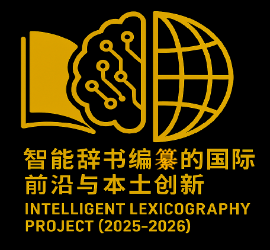

5. Intelligent Lexicography (2025-2026)
 01/2025 - 12/2026 (2 years): Project 智能辞书编撰的国际前沿与本土创新 Local innovations and international advances in intelligent lexicography (Project Number: H 20250649) - funded by the Ministry of Science & Technology of the People's Republic of China and Huazhong Agricultural University, China.
Project Leader: GENG Yundong 耿云冬 (Associate Professor, Bilingual Lexicographer in the Department of Foreign Languages at Huazhong Agricultural University, China).
Coordinator: CHEN Lian 陈恋, (LLL laboratory - University of Orléans; CRLAO-CNRS-INALCO， France).
Objectives: This international project aims to strengthen collaboration among experts from China and other countries (including France, Italy, Portugal, and Canada). Its goal is to foster direct and productive dialogue between specialists in computer science and experts in lexicography and lexicology, bringing together leading researchers to address current and emerging challenges in the fields of computational lexicology and lexicography.
Scientific Activities: International Conferences, seminars and publications.